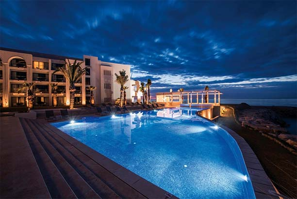

시설 이용 안내
Location
Grand Iris 호텔 별관 A동
PERIOD
상시운영(매월 3번째 화요일 휴관)
AMENITY
키즈 구명 조끼, 키즈 퍼들 점퍼, 타월
NQUIRY
+84 51-495-2498
HOURS OF OPERATION
06:00 - 22:00
Grand Iris 호텔 별관 A동
상시운영(매월 3번째 화요일 휴관)
키즈 구명 조끼, 키즈 퍼들 점퍼, 타월
+84 51-495-2498
06:00 - 22:00
물에 들어가기 전에 얼굴 화장(선크림)을 지우고 샤워 후 간단한 준비 운동을 하시기 바랍니다. 눈병, 피부병, 기타 공중 위생에 영향을 미치는 환자는 수영장에 입장할 수 없으며, 수영장 안에 침을 뱉거나 코를 푸는 행동을 금합니다. 수영장 실내에서는 외부 신발을 벗고, 반드시 수영복 재질의 의류를 착용한 후 물에 들어가시기 바랍니다 만 36개월 미만 유아는 키즈풀과 월풀 이용만 가능하며 방수 기저귀를 반드시 착용하여 주십시오 노약자 및 12세 미만 어린이는 반드시 보호자와 동행하여 주시기 바랍니다. 안전을 위하여 수영장 내에서는 튜브, 비치볼, 장난감 및 수영장비(오리발, 스노클)는 사용할 수 없습니다.(구명조끼, 암튜브 이용가능) 음주 후에는 수영장에 입장할 수 없으며, 임산부, 노약자, 심신장애가 있으신 분은 이용 시 주의하여 주십시오. 수영장 이용 시 수질관리를 위하여 일정 시간 동안 수질 정비가 진행 될 수 있습니다. 수영장 입장 시 외부 음식물 반입이 불가 하며, 귀중품은 반드시 리셉션 데스크에 별도로 보관해 주십시오. 안전을 위하여 코스 로프를 잡아당기거나 매달리지 않도록 주의하여 주십시오 상처를 입었을 때에는 안전요원에게 간단한 조치를 받고, 중상일 경우에는 퇴장해 안전요원의 지시에 따라야 합니다. 모든 고객은 안전요원의 지시에 따라야 하며, 이를 어길 시 수영장 이용이 제한될 수 있습니다. 다른 이용 고객들에게 불쾌감을 주는 행동이나 뛰어 다니는 행동은 금하여 주십시오 안전을 위하여 다이빙은 삼가하여 주십시오 몸에 이상이 있을 때에는 즉시 물 밖으로 나와 휴식을 취하여 주십시오. 호텔 측에서는 수영장 이용 시 발생하는 사고나 상해에 대하여 책임지지 않습니다.
왕복 수영(Lap Swimming)을 위한 Lap 레인은 16세 이상부터 이용이 가능하며, 수영 진행 방향에 따라 우측으로 수영해 주십시오. Lap 레인에서는 킥보드를 이용한 수영과 수중 보행은 불가하오니 일반 레인을 이용하여 주십시오. Lap 레인에서는 상황에 따라 영법 중 접영, 배영은 안전을 위하여 제한될 수 있습니다. 수영 강습 레인은 중간 레인에서 진행됨을 기본으로 하되 호텔 사정에 의해 변경될 수 있습니다. 수영장 레인 이용 시 고객의 안전과 편의를 위하여 안전 요원의 안내에 따라 이용하여 주십시오.